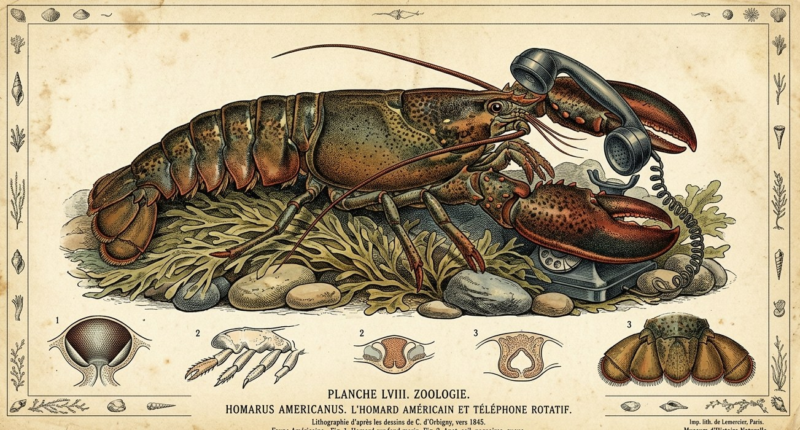

An independent brand strategy practice
Helping brands grow.
Function helps consumer brands outperform their peers by fixing or preventing the causes of brand dysfunction that are limiting their potential.

How we see it
Why good brands lose steam
It’s easy for a brand to drift into dysfunction. To go from a powerful story that clearly drives business growth to a set of slides and a muddy impact on results.
No one intends for this erosion. It happens through many small choices, changes in teams, and decisions made by committee and consensus and inertia. Taken individually, none of these seem to hurt too much, and everything seems fine – until it doesn’t.
Brand dysfunction typically arrives through a change in competition or in consumer behavior. Suddenly, everything is revealed as wrong. Pricing is too high, and the portfolio architecture no longer fits how consumers are shopping. The packaging needs a refresh, new items that seemed promising 18 months ago now are dead on arrival, and the retailers are shifting distribution to new brands and old ones that suddenly seem primed for growth – or to their own labels.
Now the clock is ticking, fast. These individual problems all have point solutions, but they leave the root causes unaddressed – the drift in the brand and its strategy – and this underlying structural weakness can transform a powerhouse brand into a has-been.
Before Function
Organic sales growth across Church & Dwight's brand portfolio, while John led its brand strategy at Razorfish
What we work on
Five common situations that hold multi-brand companies back
Our engagements go beyond strategy that sits in slides – we see it through until a brand is truly functional again.
The re-positioning is done, and nothing has changed.
The strategy work was signed off months ago and now lives in a deck. People agree with it, but it hasn't settled a single argument about what the brand should do next.
The brand is familiar, but fading.
People still know the name, but they no longer care. Previously loyal buyers are suddenly open to something new. Each new campaign comes and goes without changing much – but changing it up feels too risky.
The portfolio has outgrown the architecture.
Propositions were added one at a time, each for a good reason. Taken together, it's no longer clear what the brand signifies or how it strengthens each product's chances in the market.
A launch or redesign underdelivered.
The new product or pack scored well in research, but sales haven't followed. Instead of moving on, this is the time to dig in and understand the real problems.
The team is too stretched to step back.
Marketing runs from one deadline to the next, and the opportunities everyone can see keep slipping down the list.
Before Function
Purchase intent across Nestlé Waters' $1.9 billion portfolio of six brands, where John led brand and creative strategy at 360i
How engagements work
Start with a diagnostic. Build from there.
Every engagement starts with a diagnostic, so you see how we think and what we’ve found before you commit to anything bigger. Everything is a fixed fee, agreed up front. Nothing is billed by the hour.
The diagnostic
Fixed fee · 2–3 weeks
An outside read on how healthy your brand is, what’s causing it to drift, and what would make it functional again.
- Where the brand sits, and the evidence behind it
- The rules you’ve been working inside, real and inherited
- The root causes, and first moves to test
Projects
Fixed fee · scoped to the problem
Focused work on one of the five situations above. We take it from strategy through to the decisions it’s meant to change.
- Repositioning
- Relevance and cultural strategy
- Portfolio and brand architecture
- Launch and renovation strategy
- Marketing process and agency roster redesign
Ongoing partnership
Fixed monthly fee · ongoing
Senior strategy alongside your team until the brand is functional again, and an organization built to keep it that way.
- Brand stewardship across briefs and annual planning
- Agency briefing and direction
- Portfolio and architecture decisions as they come up
- Improving the team’s processes, skills, and capacity
Who you'd work with
John Winterkorn
Function is led by John Winterkorn. He has spent more than fifteen years in marketing, most of it in brand strategy at agencies including Razorfish, 360i, and McCann. He spent 2018 to 2026 at Razorfish, rising to Group Vice President.
Before Function
2014 shortlist for John's work on American Express Serve, at Rokkan
Contact
Partner with us
Tell us what's going on with your brand. We'll start with an honest read on where it sits, and take it from there together.
hello@thisisfunction.io